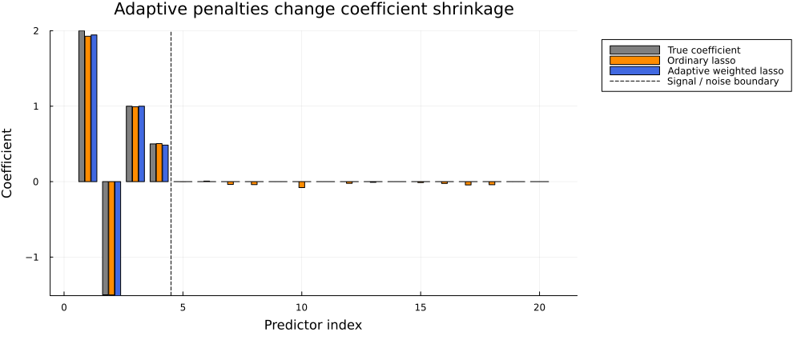

Weighted lasso
Sometimes a common penalty shrinks all predictors too uniformly. Weighted lasso lets us penalize weak pilot effects more heavily and strong pilot effects less. This example uses a ridge pilot to build adaptive weights, then compares the fit with ordinary lasso. The weights govern coefficient shrinkage, not how much each observation counts in the squared-error loss.

The weighted lasso minimizes (s/2)‖y − Xβ‖² + λ Σⱼ wⱼ|βⱼ| over β, with s = 1 for the raw sum of squares and s = 1/n for the normalized form used on this page. ProximalBase's LeastSquaresLoss(y, X) is half the sum of squares, so s * LeastSquaresLoss(y, X) is the smooth part and NormL1(λ, w) is the penalty, with the coefficient λ wⱼ for entry j. The weights belong to the penalty: this is a weighted ℓ1 penalty, not weighted least squares, and no weight enters the loss. A zero weight leaves its coordinate unpenalized; it does not fix the coefficient at 0.
This page solves one seeded problem with cyclic coordinate descent, proximal gradient descent and accelerated proximal gradient descent. The weights are those of an adaptive lasso, from a ridge pilot fit, with the first coefficient left unpenalized by a zero weight. Each solution is checked with a KKT residual computed here from X, y, λ, the weights and the coefficients, not with the solvers' converged flags.
CDSolver accepts NormL1(λ, w) on a dense Vector or a SparseIterate, and ProximalGradientDescent and AccProxGradDescent on a dense Vector, with Float32 or Float64 data. The weights are a Vector of the element type of the data, with finite nonnegative entries. See Supported problems for the combinations that the test suite checks, the rule on the coefficients λ wⱼ and its limits. The solver comparison times the four supported Float64 configurations at one common accuracy target.
The problem
The data are drawn from a seeded generator: n = 200 observations, p = 20 features, four nonzero coefficients and noise of standard deviation 0.5. The adaptive weights are wⱼ = 1/|β̂ⱼ| for the coefficients β̂ of a ridge pilot fit, and the first weight is set to 0, so coefficient 1 carries no penalty. The level is λ = 0.02. The normalized objective is
\[\frac{1}{2n}\|y-X\beta\|_2^2+\lambda\sum_j w_j|\beta_j|.\]
We simulate a zero-intercept model with independent standard-normal predictors. A larger weight makes that coefficient harder to retain. A zero weight leaves it unpenalized; it does not force the coefficient to zero.
using LinearAlgebra, Random, ProximalBase, ProximalSolvers
rng = Xoshiro(2026)
n, p = 200, 20
X = randn(rng, n, p)
beta_true = zeros(p)
beta_true[1:4] .= [2.0, -1.5, 1.0, 0.5]
y = X * beta_true .+ 0.5 .* randn(rng, n)
s = 1 / n
f = s * LeastSquaresLoss(y, X)
pilot = (X' * X + I) \ (X' * y)
w = 1 ./ abs.(pilot)
w[1] = 0.0
lambda = 0.02
g = NormL1(lambda, w)ProximalBase.NormL1{Float64, Vector{Float64}}(0.02, [0.0, 0.6640231395761124, 0.9857448714516034, 1.9350258113939864, 68.30793159318574, 46.97517055364428, 17.484178451908335, 16.084819077533613, 1084.693402082851, 10.845738374639955, 69.04752794595193, 19.524407125421032, 29.47599334318645, 39.17398698180274, 24.744703912365765, 19.050340742763982, 16.89483353491694, 13.941340701037971, 73.47991686979677, 114.54918984131817])The function below measures optimality from the data alone. For grad = s Xᵀ(Xβ − y) it returns the largest violation of 0 ∈ grad + λ w ∘ ∂|β|: at a zero coefficient the excess of |grad_j| over λ w_j (clipped at 0), and at a nonzero coefficient the distance |grad_j + λ w_j sign(β_j)|. For w_j = 0 that is |grad_j| at a nonzero coefficient and also at a zero one. It is zero at a minimizer. It takes the coefficients λ w_j itself, not from the solver's penalty object.
function weighted_kkt_residual(X, y, s, λ, w, β)
grad = s * (X' * (X * β - y))
maximum(iszero(β[j]) ? max(abs(grad[j]) - λ * w[j], 0.0) :
abs(grad[j] + λ * w[j] * sign(β[j])) for j in eachindex(β))
end
objective(β) = s * sum(abs2, y - X * β) / 2 + lambda * sum(w .* abs.(β));Solving it
The three solvers start from their own zero vector. CDSolver uses cyclic order and no momentum, which fixes the order of the coordinate updates. For the gradient methods, gradtol = 1e-10 is near the rounding level of the objective, so a solve may end on a computed objective increase (converged = false) unless increases are allowed.
options = ProximalOptions(maxiter = 10_000, ftol = 1e-14, xtol = 1e-12, gradtol = 1e-10,
allow_f_increases = true)
beta_cd, beta_pgd, beta_apg = zeros(p), zeros(p), zeros(p)
res_cd = solve!(beta_cd, f, g, CDSolver(order = :cyclic, momentum = false, tol = 1e-12))
res_pgd = solve!(beta_pgd, f, g, ProximalGradientDescent(), options)
res_apg = solve!(beta_apg, f, g, AccProxGradDescent(), options)
@assert res_cd.minimizer === beta_cd && res_pgd.minimizer === beta_pgd && res_apg.minimizer === beta_apgChecking the solutions independently
The residual weighted_kkt_residual is zero at a minimizer, and each of the three solutions has a residual of at most 1e-6. The reported objective of each run is the one computed from the data, up to rounding, and the three runs reach the same point of this strongly convex problem.
for beta in (beta_cd, beta_pgd, beta_apg)
@assert weighted_kkt_residual(X, y, s, lambda, w, beta) <= 1e-6
end
@assert isapprox(res_cd.minimum, objective(beta_cd); rtol = 1e-10)
@assert isapprox(res_pgd.minimum, objective(beta_pgd); rtol = 1e-10)
@assert isapprox(res_apg.minimum, objective(beta_apg); rtol = 1e-10)
@assert maximum(abs, beta_cd - beta_pgd) <= 1e-5 && maximum(abs, beta_cd - beta_apg) <= 1e-5The unpenalized coefficient and the sparsity
The zero weight leaves coefficient 1 unpenalized: its optimality condition is grad₁ = 0, with no threshold, and the coefficient is nonzero here (the true value is 2). The adaptive weights also keep fewer coefficients than the unweighted lasso with the same λ.
@assert beta_cd[1] != 0
beta_lasso = zeros(p)
solve!(beta_lasso, f, NormL1(lambda), CDSolver(order = :cyclic, momentum = false, tol = 1e-12))
@assert count(!iszero, beta_cd) < count(!iszero, beta_lasso)Reading the coefficient comparison
The bars compare the same data at the same base penalty level, although the coordinate thresholds differ: $\lambda w_j$ for the adaptive fit versus $\lambda$ for ordinary lasso. Predictor 1 is deliberately left unpenalized. The adaptive fit retains fewer noise predictors in this seeded data set. This observation illustrates a possible effect of the weights, not a general guarantee.
using Plots
primary_figure = bar(hcat((1:p) .- 0.26, Float64.(1:p), (1:p) .+ 0.26),
hcat(beta_true, beta_lasso, beta_cd); bar_width=0.24,
label=["True coefficient" "Ordinary lasso" "Adaptive weighted lasso"],
color=[:gray :darkorange :royalblue], xlabel="Predictor index", ylabel="Coefficient",
title="Adaptive penalties change coefficient shrinkage", legend=:outertopright, size=(1000, 430))
vline!(primary_figure, [4.5]; color=:black, linestyle=:dash, label="Signal / noise boundary")
savefig(primary_figure, "weighted_lasso.svg")
nothingWeights of another element type
The weights must have the element type of the data. Weights of another type are refused with an ArgumentError before x is touched; collect(T, vec(w)) converts them.
untouched = zeros(p)
err = try solve!(untouched, f, NormL1(lambda, Float32.(w)), CDSolver()) catch e e end
@assert err isa ArgumentError && all(iszero, untouched)
for (name, r, beta) in (("CDSolver", res_cd, beta_cd), ("ProximalGradientDescent", res_pgd, beta_pgd),
("AccProxGradDescent", res_apg, beta_apg))
println(rpad(name, 24), " iterations = ", r isa ProximalSolvers.CDResults ? r.passes : r.iterations,
", KKT residual = ", weighted_kkt_residual(X, y, s, lambda, w, beta),
", nonzeros = ", count(!iszero, beta))
end
println("unweighted lasso with the same λ: nonzeros = ", count(!iszero, beta_lasso))CDSolver iterations = 9, KKT residual = 1.121325254871408e-16, nonzeros = 4
ProximalGradientDescent iterations = 19, KKT residual = 4.691144694923821e-11, nonzeros = 4
AccProxGradDescent iterations = 20, KKT residual = 3.474215359844379e-11, nonzeros = 4
unweighted lasso with the same λ: nonzeros = 15Limitations
Pilot estimates are noisy. Inverse-magnitude weights can become large when a pilot coefficient is close to zero, making the resulting selection sensitive to the pilot and its regularization. Our seeded pilot has finite weights; practical choices may use a prespecified stabilizing offset. The unpenalized first predictor is an illustrative modeling decision, not evidence that it must always be retained. A good optimization certificate does not validate the pilot, the chosen penalty, or the assumption of a sparse linear model.
What we learned
Weighted lasso changes the coordinate thresholds within an ordinary lasso problem. It can express different prior shrinkage preferences while retaining the same loss, solver APIs, and independently computed weighted KKT conditions.